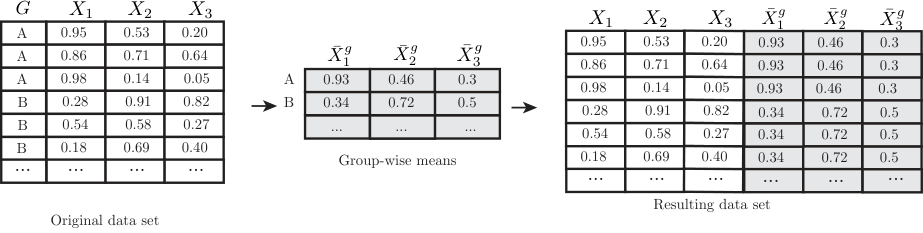
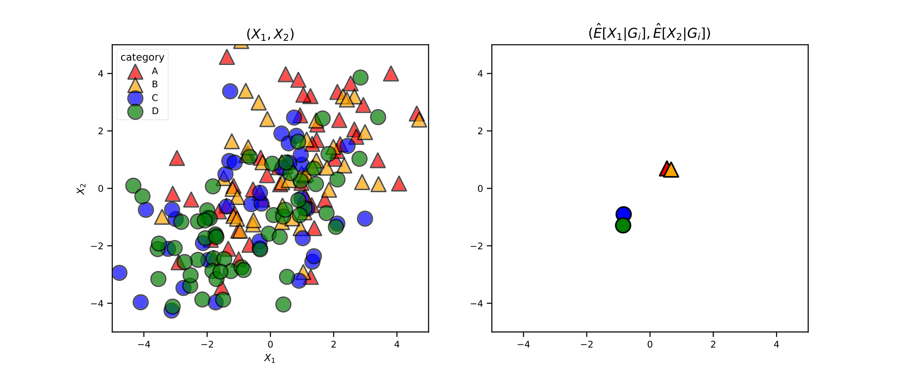
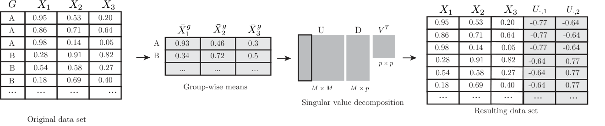
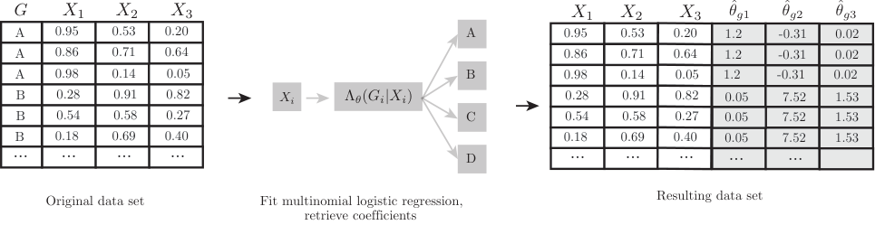
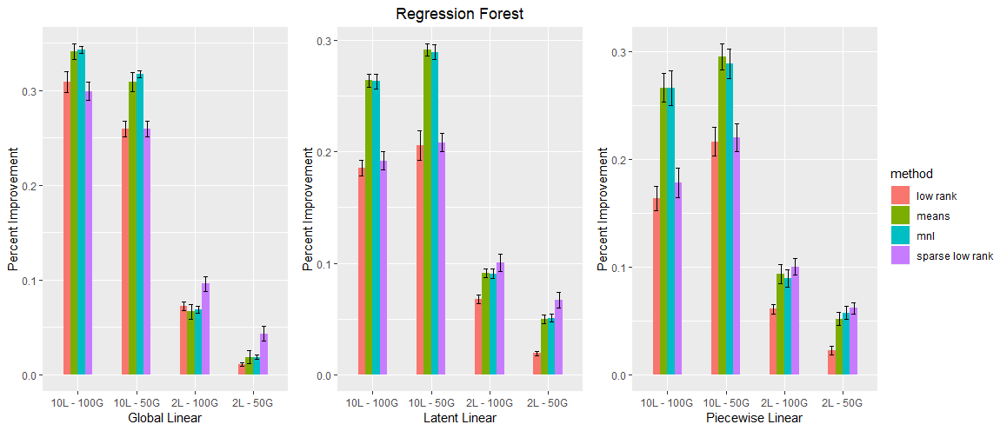
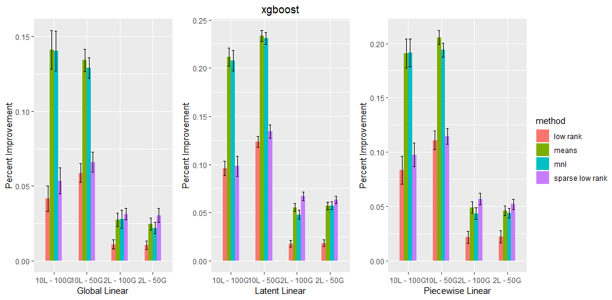

分类变量的充分表示（Sufficient Representations for Categorical Variables）
作者：Jonathan Johannemann（jonjoh@stanford.edu）、Vitor Hadad（vitorh@stanford.edu）、Susan Athey（athey@stanford.edu）、Stefan Wager（swager@stanford.edu）
机构：斯坦福大学（Stanford University）
预印本：arXiv:1908.09874 ｜ 模拟代码：github.com/grf-labs/sufrep
背景与解释（译者注）：关于本文标题与任务命名的说明。本文的正式标题是 Sufficient Representations for Categorical Variables（分类变量的充分表示），作者为 Johannemann、Hadad、Athey、Wager。它与 grf-labs 生态中常被一并提及的 SURE（Sure Independence Ratings，充分独立比率）系列工作属于同一研究纲领下的不同论文：SURE 关注的是用残差化（residualization）的方式把 nuisance function 压缩到低维充分表示空间，而本文关注的是如何把高基数分类变量编码成低维实值向量，并且这个编码本身要能被下游的通用一致性学习器（universally consistent learner）使用。两者共享"充分表示"这一核心概念，但技术手段与适用场景不同。本译文严格按原文翻译，不额外引入 SURE 的结论。
摘要
许多学习算法都要求先把分类数据转换成实值向量，才能将其用作输入。分类变量通常被编码为独热（one-hot）或虚拟（dummy）向量。然而，当类别取值数量很大时，这种表示方式会造成浪费，因为它引入了大量低信噪比的回归变量（regressor）。在本文中，我们考察若干简单的替代方案：这些方案构造的估计器是通用一致的（universally consistent），并且依赖于分类变量的低维实值表示，该表示在"不损失任何预测信息"的意义下是充分（sufficient）的。随后我们在模拟数据与观测数据上对这些既有方法与所提方法进行了比较。
1 引言
许多回归问题涉及来自若干组（group）的数据，而这些组可能在统计上是相关的。例如在医疗场景中，我们可能希望利用来自多家医院的病人数据来建模健康结局，同时承认不同医院可能对病人产生无法由其他协变量解释的特异性效应。当处理来自不同学校的学生、来自不同邮编的选民、来自不同企业的雇员等数据时，也会出现类似的考虑。
处理这一问题最广泛使用的方案之一是固定效应建模（fixed effects modeling）。具体而言，假设我们观测到 \(n\) 个样本 \(\{X_i, \, G_i, \, Y_i\}\)，\(i = 1, \, ..., \, n\)，其中 \(X_i \in \mathbb{R}^p\) 是一组个体特定的协变量，\(G_i \in \mathcal{G}\) 是记录组归属的分类变量，\(Y_i \in \mathbb{R}\) 是关注的响应变量，我们希望估计
此时，简单的固定效应方法先设定模型
然后通过普通最小二乘回归估计系数 \(\beta\) 与 \(\alpha_g\)。这一思路更精细的推广可能涉及考虑 \(x\) 的非线性变换、组归属与协变量 \(x\) 之间的交互项，和/或正则化。
然而，当信号存在复杂的非线性结构，或者组数 \(\lvert\mathcal{G}\rvert\) 很大时，固定效应建模的表现并不总是理想。模型 (2) 相当刚性，可能无法表示丰富的信号；同时，模型 (2) 中大量的 \(\alpha_g\) 参数会给统计推断带来问题。换句话说，模型 (2) 可能参数过多以致难以稳定，却又缺乏足够的自由度去很好地拟合信号。
本文的目标是提出一种更简约的组归属表示方式，以避免上述问题。具体而言，我们寻找一个映射 \(\psi\)，把组归属 \(G_i\) 嵌入到一个 \(k\) 维空间而不丢失任何预测信息，即
其中 \(k\) 很小（特别地，\(k \ll \lvert\mathcal{G}\rvert\)），且函数 \(f(\cdot, \, \cdot)\) 仍然容易学习。一旦有了这样的映射，问题 (1) 就变成了一个常规的回归问题，其特征为 \((p+k)\) 维实值向量 \((X_i, \, \psi(G_i))\)，于是可以直接使用现成的统计学习软件来处理。
为了得到关于组归属 \(G_i\) 的有用表示，我们当然需要对 \(G_i\) 与目标结局 \(Y_i\) 之间的关系作出某种假设。本文所作的核心假设 我们称之为充分潜在状态假设（sufficient latent state assumption），见图 1：组归属 \(G_i\) 对 \(Y_i\) 没有直接的因果效应，但可能与那些确实对 \(Y_i\) 有直接效应的潜变量 \(L_i\) 相关联。仍以病人分布在多家医院的例子来说明，我们假设医院本身并不直接导致健康结局 \(Y_i\)；然而，医院仍可能通过它们与潜在因果变量的关联而对 \(Y_i\) 具有预测作用。病人可能具有未被观测的特征，例如疾病严重程度或社会经济资源，它们既影响 \(Y_i\)，又导致该病人自我选择进入不同的医院。本文的主要结果是：在这一充分潜在状态假设下，形如 (3) 的实用表示确实存在，并且可以从数据中学习得到。
问题 (1) 形式的回归常见的一个重要应用领域是因果推断：我们希望在控制已测混杂因子（confounder）的同时，度量某种处理（treatment）对关注结局的效应。在这类应用中，常见的情形是混杂因子中混合了连续变量（如年龄、收入等）与高基数的分类变量（如邮编、医院等）。面对这类数据，现代因果推断方法通常先求解一系列形如 (1) 的非参数回归问题，再将它们合成为双重稳健（doubly robust）的处理效应估计量。围绕这一思路构建的软件包包括 R 语言中的 tmle 与 grf。正如第 5 节将进一步讨论的，我们预计本文针对高基数分类变量的预测建模方法，在双重稳健处理效应估计的语境下会特别有用。
本文结构如下。我们首先在 1.1 节回顾固定效应文献中相似的问题设定，以及使用现有方法的缺点。在第 2 节中，我们引出主要引理，它试图刻画我们究竟希望从分类变量中提取哪些真实信息。在第 3 节中，我们把引理 1 展开，发展出利用这一洞见的方法。在第 4 节中，我们用模拟与观测数据检验所提方法，并在第 5 节讨论实际表现与预期相比如何。
1.1 相关工作
把高基数分类变量表示为实值向量这一原则，在许多不同领域都扮演了重要角色。例如在计量经济学中，类别往往代表个体观测所属的群体（如班级队列或国家的一个地区），或者代表个体的标识（如纵向数据中的个体编号）。
我们的工作最初受到 Arkhangelsky 等人（2018）一个结果的启发：他们证明，在许多我们希望同时控制分类混杂因子与连续混杂因子 \(X_i\) 与 \(G_i\) 的场景中，并不需要显式地控制分类变量——只需控制每个类别内连续混杂因子的分布就够了。进一步地，如果分布 \(X_i \mid G_i\) 服从指数族分布，那么只需控制 \(\mu_{G_i}\) 就够了，其中 \(\mu_g = \mathbb{E}[X_i \mid G_i = g]\)。从某种意义上说，本文的结果可以被视为把 Arkhangelsky 等人（2018）的思想应用到通用预测建模问题上的一个案例。
在自然语言处理中，人们通常以一个预处理步骤开始更复杂的分析，该步骤把词表示为能够刻画词语在上下文中用法的向量。与此同时，Cerda 等人（2018）近期考虑了一个相关问题：如果若干分类水平只是彼此的拼写变体，就会产生"脏"的分类变量，他们提出使用一种利用词典相似性的低维嵌入（即拼写相似的因子被安排在彼此靠近的位置）。本文不同之处在于，我们利用 \(X_i\) 中的信息而非词典信息来构造嵌入；不过，高层结论是一致的：利用辅助信息把分类变量嵌入到低秩空间，确实能带来有意义的收益。此外，Rahimi 与 Recht（2008）提出把分类变量的独热表示随机投影到 \(\mathbb{R}^k\) 中，其中 \(k\) 相对较小。
另一方面，在面板数据分析文献中，本文所提出的方法或许与 Bonhomme 与 Kleibergen（2015）的方法最为接近：该文考虑个体时间序列归属于离散簇的情形，且每个簇只有一个固定效应（而非每条时间序列一个）。Bonhomme 与 Kleibergen（2015）随后通过一种类似 \(k\)-means 的算法来拟合该模型，即在聚类与带簇固定效应的估计之间交替进行。本文的方法与这两者都不完全可比：我们并不专注于文本数据，也不假设潜在状态 \(L_i\) 可以被一致地估计（相比之下，Bonhomme 与 Kleibergen 假设他们有足够长的时间序列，以致其聚类步骤是相合的；在我们的设定中，这等价于假设 \(L_i\) 可以被还原）。
在更广义的机器学习文献中，关于在非参数回归中如何最好地处理组归属 \(G_i\) 的讨论，集中在如何编码 \(G_i\) 以便作为输入交给统计软件。一个简单的做法是独热编码：
使得 \(\iota(g)\) 的第 \(j\) 个分量当且仅当 \(g\) 对应于 \(\mathcal{G}\) 中第 \(j\) 个元素时为 1，其中 \(M := \lvert\mathcal{G}\rvert\)。注意，在独热编码特征 \((X_i, \, \iota(G_i))\) 上做线性回归，恰好恢复出标准固定效应模型 (2)。
然而如上所述，当 \(M := \lvert\mathcal{G}\rvert\) 很大时，独热编码可能导致维度高得不理想的问题。脚注另一个略为隐蔽的困难是：当分类变量有很多水平时，单个特征 \(\iota(G_i)_j\) 会变得非常稀疏（即它们通常为 0，极少为 1）。许多统计学习方法在特征方差大致反映其取值范围时表现更好，而不是在这类尖峰式的特征上。在附录 B 中，我们给出了若干同样把类别投影到 \(\mathbb{R}^{M}\) 的编码方法。这些方法不利用来自协变量 \(X_i\) 或响应 \(Y_i\) 的信息，因而 suffer 于对被观测组 \(\mathcal{G}\) 做高维表示所带来的同样的困境。对这些方法而言，主要差别在于用户对编码变量的解读：这些编码变量通常被构造为某个子集 \(\mathcal{G}' \in \mathcal{G}\) 的平均效应相对于集合 \(\mathcal{G} \backslash \mathcal{G}'\)（或其某个子集）平均效应的比较。
固定效应问题在寻求稀疏的方法中尤其困难，例如 lasso 或决策树，以及相关的集成方法如随机森林或梯度提升树。寻求稀疏的方法会把特征的贡献置零，除非有很强的证据表明这些特征对预测重要；而对于 \(G_i\) 的稀有水平来说，很难通过其独热特征产生足够的证据以获得对模型的非零贡献。最终的结果是，寻求稀疏的方法可能在很大程度上忽略高基数的独热编码因子。
处理分类变量与决策树的另一种常见做法，是考虑允许对分类变量的各水平做任意分组的全析因切分（full factorial splits）。对于一个有 \(M := \lvert\mathcal{G}\rvert\) 个水平的变量，这会产生 \(2^{M-1}-1\) 种潜在切分。Breiman（1984）表明，我们可以在与 \(M\) 成线性的时间里优化这一指数级的切分集合；然而从统计角度看，当水平数很大时，这类析因切分极易严重过拟合。
背景与解释（译者注）：为什么分类变量需要充分表示而非独热编码？在高基数场景下（如医院 ID、学校代码、邮编），独热编码会带来三重问题。其一，信噪比稀释。独热特征是"尖峰型"的：\(M\) 个特征中每个样本只在其中一个取 1，其余全为 0。这种稀疏性对很多学习算法并不友好——决策树的一次切分只能利用一个特征，而该样本几乎总是落在这个特征的"负类"上，于是树的分裂难以把不同组分开。其二，参数爆炸。独热编码等价于为每个组引入一个截距，即模型 (2) 中的 \(\alpha_g\)。当 \(M\) 很大时，参数数目远超样本量，统计推断变得不可靠（Neyman，1948）。其三，参数效率低。独热表示为每个组消耗一整个自由度，即使组与组之间的真实差异可能只有少数几个自由度那么大。本文的核心主张是：\(M\) 维的独热向量其实只携带了很少量的信息，因此存在 \(k \ll M\) 维的充分表示，在保留全部预测信息的同时大幅降维。
2 用充分潜在状态表示分组
引言中提出、并在因果图 1 中刻画的充分潜在状态假设意味着：结局 \(Y_i\) 的分布仅通过某个不可观测的潜变量 \(L_i\) 依赖于可观测因子 \(G_i\)。换言之，如果我们知道 \(L_i\) 的取值，那么知道 \(G_i\) 就不会再为结局提供任何额外信息。举一个简单例子：我们可以假设病人的潜在健康状态（\(L_i \in \{\text{good}, \text{poor}\}\)）同时决定了他们被收治到哪家医院（\(G_i\)）、表现出什么症状（\(X_i\)），以及取得什么健康结局（\(Y_i\)）。在给定潜在健康状态后，医院无法为其他任何变量提供额外信息。反过来说，了解病人所在医院这件事之所以有用，仅限于它能帮助我们推断其健康状态。
下面的引理指出我们可以刻画关于分类变量 \(G_i\) 的信息是如何进入模型的：结局的条件期望函数只依赖于给定可观测类别时潜变量的条件概率。这一事实在推导后续章节的表示方法时至关重要。
引理 1（充分表示的存在性）。假设潜在状态 \(L_i\) 是离散的，具有 \(k\) 个可能的水平，并且充分潜在状态假设（图 1）所要求的概率结构成立。那么，
提供了 \(G_i\) 在 (3) 意义下的一个充分表示：
式 (5) 把上一段的直觉形式化了。与类别相关的信息只通过概率集合 \(\mathbb{P}[L_{i} = \ell \mid G_{i} = g]\) 进入条件期望。如果只有 \(k\) 个潜在组，那么每个类别都可以由一个 \(k\) 维的概率向量无损地表示。该结果的一个直接推论是：若我们知道了 \(\psi\)，并把训练样本 \(((X_i, \, \psi(G_i)), \, Y_i)\) 交给任何通用一致的学习器，该学习器最终会恢复出最优的预测函数 \(\mu(\cdot)\)。回到本节开头的例子：医院的身份通过"给定医院时病人处于健康或不良状态的概率"进入模型。
由式 (5) 可见，条件期望函数 \(\mu\) 对潜变量概率 \(\psi\) 的依赖是非线性的；不过，只要我们在 \(((X_i, \, \psi(G_i)), \, Y_i)\) 上使用表达能力足够的方法学习方法，一致性仍可保持。已知具有通用一致性的方法包括 \(k\)-近邻、各种基于树的集成方法，以及神经网络。
以上讨论似乎意味着我们需要直接估计 \(\psi(g) = \mathbb{P}[ L_{i} | G_{i} = g]\)。然而，由于这一量依赖于不可观测的变量 \(L_i\)，若没有进一步的假设和更精巧的方法，它的识别是不可能的。因此我们转而采用一种更简单的思路：寻找不同的、只依赖于可观测量的函数 \(f(g)\)（例如 \(f(g) = \mathbb{E}[X_{i} | G_{i} = g]\)），然后证明它们同样是充分表示——因为它们可以写成 \(\psi(g)\) 的可逆函数。
背景与解释（译者注）：充分表示 vs. 充分调整准则（Suffiency）。这两个词都译作"充分"，但含义不同，容易混淆。充分调整准则（sufficient adjustment criterion）出自 Rubin（1983）与 Rosenbaum（1983）的工作，它说的是：为了消除混杂，控制某个特定的变量集（或其条件分布）就足够了。这是在"识别"层面谈问题——目标是估计处理效应，需要判断哪些调整集是有效的。本文的充分表示（sufficient representation）则是一个纯粹的降维命题：它说的是条件期望 \(\mu(x,g)\) 只通过 \(\psi(g)=\mathbb{P}[L|G=g]\) 这 \(k\) 个数依赖于组 \(g\)，因此任何 \(g\) 的双射像都是同样的充分表示。引理 1 的意义在于它把"哪些信息进入了模型"这件事彻底刻画清楚了，从而一旦找到 \(\psi(g)\) 的某个可观测代理量，便自动获得充分性。为什么"可逆函数"是关键？引理 2、3、4 的证明策略都是：先证明 \(\psi(g) = f(h(g))\)，其中 \(h(g)\) 只依赖可观测量。若 \(f\) 在所需方向上可逆，则 \(\psi\) 的全部信息都编码在 \(h(g)\) 里，故 \(h(g)\) 充分。若映射不可逆，结论就不成立了——这正是"可逆"三个字的分量所在。
3 分类变量的编码方法
下面提出的方法形式上都是：删去分类列，用一组可以被证明编码了全部分类信息的列来替换它。每种方法都利用了上一节所描述的结构。若想了解已在使用的其他分类编码方法概览，请参见附录 B。
3.1 均值编码（Means encoding）
作为第一种方法，我们删去分类变量 \(G_{i}\)，并代入给定分类变量时连续回归变量 \(X_{i}\) 的平均值。图 2 给出了示意。

这一表示易于解释，实现上也十分高效。当回归变量个数 \(p\) 相对于类别数很小（\(p \ll \lvert\mathcal{G}\rvert\)）时，该方法可能特别适用，因为此时相比独热编码等传统方法，降维幅度更为可观。图 3 为我们预期该方法有效提供了直观解释：连续变量 \((X_{1}, X_{2})\) 的分组均值可能揭示出每个类别背后的主导潜在组。

下面的引理给出了该表示构成充分表示的条件。所有证明见附录 A。
引理 2（均值编码的充分性）。在引理 1 的条件下，另外假设由 \((A)_{tj} := \mathbb{E}[X_{it} \mid L_{i} = l]\) 定义的矩阵 \(A\) 是左可逆的（left-invertible）。那么 \(p\) 维向量 \(\omega(g) := \mathbb{E}[X_{i} \mid G_i = g]\) 是每个类别在 (3) 意义下的充分表示：
算法 1：均值编码方法
过程 GroupAverages(X, G):
Ω ← 0 的 p × M 零矩阵
对 g 从 1 到 M:
Ω_{·,g} ← (1 / |{i : G_i = g}|) · Σ_{i : G_i = g} X_i
返回 Ω
过程 MeansEncoding(X, G):
Ω ← GroupAverages(X, G)
S ← 0 的 n × p 零矩阵
对 i 从 1 到 n:
S_{i,·} ← Ω_{·,G_i}
返回 S3.2 低秩编码（Low-rank encodings）
如果连续协变量的维度足够低使得 \(p \ll M\)，那么均值编码可以高效地概括分类变量的效应。当 \(p\) 较大时，使用条件均值的更低维表示可能更有利。我们提出两种低秩编码方法，二者都涉及对分组均值矩阵 \(\Omega\) 的转置做矩阵分解，其中 \((\Omega)_{jg} = \mathbb{E}[X_{ij} | G=g]\)。

一种方案是用奇异值分解 \(\Omega^T = U D V^{T}\) 对我们 \(p \times M\) 的分组均值矩阵 \(\Omega\) 的转置做分解。然后可用左奇异向量矩阵 \(U\) 的第 \(g\) 行的前 \(k\) 列作为第 \(g\) 个类别的表示。注意在实践中我们处理的是经验对应物 \(\widehat{\Omega}\)，且 \(k\) 一般未知，因此我们建议使用交叉拟合（cross-fitting，即 K 折交叉验证）来确定。图 4 给出了示意。
第二种低秩方案是用稀疏主成分分析（SPCA，Zou 等，2006）替代 SVD。顾名思义，该方法通过在载荷矩阵的系数上施加 elastic-net 风格的惩罚来扩展原始 PCA 算法。其结果是矩阵 \(\Omega^T\) 被近似为向量的稀疏线性组合。脚注这种稀疏性有两个方面的好处。其一，稀疏 PCA 得到的主成分是稀疏向量，可能更具可解释性。其二，如果我们的通用估计器是基于树的模型（如随机森林或 xgboost），它们在任意节点上通过考虑单个协变量来拟合数据，那么由于原始协变量空间被旋转，稠密主成分可能难以被利用。也就是说，如果一棵树通过单独使用每个变量本来能给出好的切分，那么当这些变量被线性组合之后，它可能无法做到同样的事。另一方面，稀疏 PCA 需要额外调节其正则化参数 \(\lambda\)，这可以通过交叉验证完成。
引理 3 表明：如果确实只有 \(k\) 个潜在组，那么仅使用左奇异矩阵前 \(k\) 列、或前 \(k\) 个稀疏主成分的表示确实是充分的。与均值方法一样，我们依赖估计器的通用一致性性质来学习这一非线性映射。
引理 3（低秩编码的充分性）。在引理 1 的条件下，另外假设由 \((A)_{tj} := \mathbb{E}[X_{it} \mid L_{i} = g]\) 定义的矩阵 \(A\) 是左可逆的。那么 \(k\) 维向量 \(u(g) := U_{g,1:k}\) 是每个类别在 (3) 意义下的充分表示：
算法 2：低秩编码方法
过程 LowRankEncoding(X, G, k):
Ω ← GroupAverages(X, G)
U, D, V^T ← SVD(Ω^T) # 奇异值分解
S ← 0 的 n × k 零矩阵
对 i 从 1 到 n:
S_{i,·} ← U_{G_i, 1:k} # 用截断后的左奇异矩阵行填充
返回 S算法 3：稀疏低秩编码方法
过程 SparseLowRankEncoding(X, G, k):
Ω ← GroupAverages(X, G)
A, B ← SPCA(Ω^T) # 稀疏主成分分析
Z ← Ω^T · B_{·,1:k} # 在截断的主成分上投影
S ← 0 的 n × k 零矩阵
对 i 从 1 到 n:
S_{i,·} ← Z_{G_i, ·} # 用稀疏主成分的行填充
返回 S3.3 用多项逻辑回归系数编码
最后，我们提出用多项逻辑回归（multinomial logistic regression）来估计类别归属的条件概率，其系数为 \(\{\theta_{g} \}_{g \in \mathcal{G}}\)：
然后用与第 \(g\) 个类别相关联的 \(p\) 维系数向量 \(\theta_{g}\) 来表示它。该方法的动机在于：预测模型 \(\mu(x, g)\) 可以被改写成只通过 \(P(G_{i}=g|X_{i}=x)\) 依赖于类别 \(g\)；而在上述多项逻辑回归假设下，这就归结为对 \(\theta_{g}\) 系数的依赖。

另一个同样使用回归系数作为分类表示的相关工作，是自然语言处理中的 word2vec 模型。word2vec 的作者提出了两种方法，把大规模文本语料中的词（类别）表示为相对低维的实值向量。在其中一种方法里，每个词最初被赋予两个表示：作为中心词的 \(v_{w}\)，以及作为周围上下文词的 \(v_{c}\)。随后作者主张，最优表示是那个能让所有在附近共现的词对 \((w, c)\) 的内积 \(v_{w}^{T}v_{c}\) 的对数概率最大的表示。本文方法以类似的方式工作：若令连续向量 \(X_{i}\) 充当"上下文"，令 \(\theta_{g} \in \mathbb{R}^{p}\) 表示每个类别，那么最大化内积 \(X_{i}^{T}\theta_{g}\) 的对数概率就等价于最大化上面的多项逻辑回归。
引理 4（MNL 系数的充分性）。在引理 1 的条件下，另外假设 (19) 中的 \(A\) 是左可逆的，且 \(\mathbb{P}[ G_{i}=g \cond X_{i}]\) 服从系数为 \(\{\theta_{g} \}_{g \in \mathcal{G}}\) 并含截距的多项 logit 分布。那么向量 \(\theta_{g} \in \mathbb{R}^{p}\) 在 (3) 意义下是充分的：
算法 4：多项逻辑回归方法（MNL）
过程 MNL(X, G):
θ ← argmin_θ Σ_i log Λ_θ(G_i | X_i) # 多项逻辑回归
S ← 0 的 n × p 零矩阵
对 i 从 1 到 n:
S_{i,·} ← θ_{G_i} # 用系数向量填充
返回 S背景与解释（译者注）：残差化的直觉与共线性问题。三种方法（均值、低秩、MNL）在结构上是同源的：由证明可见 \(\Omega = A\Psi\)，其中 \(A\) 是"潜在组 → 协变量均值"的矩阵，\(\Psi\) 是"可观测类别 → 潜在概率"的矩阵。若 \(A\) 左可逆，则 \(\psi(g) = A^\dagger \omega(g)\)。这本质上是一次投影/分解，与 SURE 系列工作常用的残差化在精神上一致：都是把 \(\mathbb{R}^M\) 里的高维信息压缩到 \(k\) 维的充分统计空间。共线性的坑在于：\(A\) 左可逆是个实质条件。若两个潜在组的协变量均值完全相同（即 \(A\) 秩亏），那么 \(\omega(g)\) 就无法区分这两个组——此时无论下游模型多强，组信息都被投影丢掉了，且这种信息损失是不可恢复的。实践中这提醒我们两点：其一，低秩编码的 \(k\) 必须由交叉验证（cross-fitting，即 K 折交叉验证）选出，\(k\) 过大会重新引入噪声维度；其二，MNL 编码在极端类别不平衡时可能数值不稳，因为分母 \(\sum_{g'}\exp(X_{i}^{T}\theta_{g'})\) 会被优势类主导，这也是实测中 MNL 在 Pakistan 数据集上表现不稳定的原因之一。
4 实验
在下面一节中，我们在模拟数据集与真实世界数据集上，考察每种方法相对于独热编码的有效性。我们使用两种常用方法：随机森林（random forest）与 xgboost。脚注
4.1 模拟实验
我们考虑两种模拟设计：它们共享潜在组 \(L_{i}\)、可观测组 \(G_{i}\) 与协变量 \(X_{i}\) 的分布，但结果模型 \(Y_{i}\) 不同。
潜在组、可观测组与连续协变量。潜在组 \(L_{i}\) 从可用组的集合中均匀抽取，我们把组标识为整数：
接下来，可观测组 \(G_{i}\) 按如下规则抽取。首先，我们把可能的可观测组的集合 \(\mathbb{G}\) 划分成等大的集合 \(\{\mathbb{G}_{\ell}\}_{\ell=1}^{|\mathcal{L}|}\)。然后抽取可观测组 \(G_{i}\)，使得被指派到潜在组 \(L_{1}\) 的观测有更高概率落入可观测组 \(\mathbb{G}_{1}\)，\(L_{2}\) 中的观测很可能属于 \(\mathbb{G}_{2}\)，依此类推。用符号表示为：
与潜在组 \(L_{i} = \ell\) 相关联的协变量服从正态分布 \(X_{i} \sim \mathcal{N}(\mu_{\ell}, \Sigma)\)。除随机抽取的一组取值 \(\mathcal{J}\) 外，均值为零，这些取值取 \(\{-1, +1\}\)，且 \(|\mathcal{J}| = 3\)。
结局。在结果设定上，我们让每个场景都比前一个明显更复杂。在全局线性（global linear）设定中，每个潜在组有自己的截距，而斜率 \(\beta\) 在各潜在组之间相同：
其中截距与斜率的生成方式如下。斜率的归一化确保来自截距、回归变量与噪声的信号大致可比。
在潜在线性（latent linear）设定中，我们加大对潜在组的依赖，且结果模型在给定各潜在组特有系数的条件下关于回归变量是线性的：
其中
最后，在潜在分段线性（latent piecewise linear）设定中，我们先用中位数对每个特征 \(X_i\) 做划分，算出一个二进制基（dyadic basis），然后根据观测到的 \(X_i\) 是高于还是低于其特征的中位数，选用不同的潜在组斜率（\(\beta^+_l\) 或 \(\beta^-_l\)）。
其中
| 参数 | 取值 |
|---|---|
| 观测数（\(n\)） | 5000 |
| 连续协变量（\(p\)） | 20 |
| 相关系数（\(\rho\)） | 0.25 |
| 信噪比 | 0.5 |
| 本组概率（\(p_{L}\)） | 0.9 |
| 潜在组数（\(|\mathcal{L}|\)） | 2，10 |
| 可观测类别数（\(|\mathcal{G}|\)） | 100，500 |
4.2 模拟实验结果
对每个模拟数据集，我们用第 3 节描述的各种方法估计结局，然后用均方误差（mean squared error, MSE）评估预测表现。每个模拟设定与模型我们都用 200 个随机生成的种子重复模拟。

模拟结果见图 6。我们发现，上述那些试图估计潜在组的方法，对回归森林与 xgboost 都一致地优于那些需要往输入矩阵 \(X\) 中额外添加 \(|\mathcal{G}|\) 列的方法。特别地，当潜在组数非常小时，稀疏低秩方法往往表现良好。当潜在组数较多时，我们看到低秩方法表现落后，而多项逻辑回归编码与均值编码表现更好。我们也注意到多项权重方法在这种情况下可能表现不错，或许是因为此时 \(n\) 很大、每组观测数足够多，足以支撑该方法。
对于那些没有利用低秩结构的方法，我们注意到回归森林与 xgboost 的性能提升主要来自维度降低。我们发现，置换（permutation）、Fisher 与多重置换（multi-permutation）方法平均而言远优于那些添加 \(|\mathcal{G}|\) 列的方法，但相对于估计潜在组的方法仍然逊色。
当有 2 个潜在组时，相对独热编码的性能提升在 1–10% 之间；而当有 10 个潜在组时，性能提升可达 27–33%。直观地说，我们发现在 2 个潜在组的情况下，回归森林与 xgboost 从这种编码中获得的收益总体上较少，这是因为图 1 中条件独立图所定义的关系本身复杂度较低。随着信号更加依赖于潜在组归属，相对独热编码的提升也倾向于增大。在大多数情形下，分段线性模拟上的表现维持了相同或更高的相对独热编码提升幅度。此外我们发现，像 xgboost 这样更复杂、更非线性的方法从这些编码方法中获益略少。

4.3 实证应用
我们还在 Kaggle 上可公开获取的数据集上评估了这些方法。我们在数据集上运行 4 折分层交叉验证，以避免测试集中出现训练集里没有的分类变量这一情形。由于每一折都可能丢弃相当可观的信息，我们还做了配对 t 检验（paired t-test），以进一步验证或否定交叉验证过程中看到的结果。
巴基斯坦教育绩效（Pakistan Educational Performance）。在该数据集中，Hemani 整理了来自巴基斯坦非营利组织 Alif Ailaan 的一系列调查，该组织专注于改善全国的教育。调查的目标是提供一种客观手段，用以比较不同城市与省份的学校体系，从而激发地方政府之间的竞争以推动教育改革。
下文分析所用的数据集包含 \(n = 580{,}504\) 条记录（已删除空值行），可分解为 2013 至 2016 年间的 \(|\mathcal{G}| = 127\) 个城市。额外协变量的个数 \(p = 20\)；更多的数据清洗与预处理细节在 github 仓库中另有说明。
Ames 住房（Ames Housing）。Ames 住房数据集的目标是作为波士顿住房数据集的一个更复杂的替代品。De Cock 的目的是把该数据集用于他回归课程的期末项目，让学生能更充分地展示所学内容。
Ames 住房数据集包含 2006 至 2010 年间爱荷华州 Ames 的 \(n = 2{,}930\) 条个人住宅销售记录。数据集有 80 个协变量，我们的分类变量"neighborhood（社区）"有 \(|\mathcal{G}| = 25\) 个水平。
King County 房屋销售（King County House Sales）。King County 房屋销售数据集包含 2014 年 5 月至 2015 年 5 月间华盛顿州 King County 的 21,613 条住宅销售记录。作者除说明它是一个适合测试回归模型的不错数据集之外，并未提供太多额外信息。该数据集相对热门，在本文写作时已有超过 169,000 次浏览与 28,000 次下载。
数据本身包含 21 个协变量，其中包含房屋售价。我们把"zipcode（邮编）"协变量（其有 \(|\mathcal{G}| = 70\)）作为分类变量。
4.4 实证结果
我们可以看到，对回归森林而言，平均而言相对独热编码是有提升的；而 xgboost 从这些编码方法相对独热编码中获益较少。对回归森林来说，唯一受益不多的主要情形是 Ames 数据集——这自然可以解释，因为它的协变量个数 \(p\) 远大于观测到的组数 \(|\mathcal{G}|\)。因此像 means 与 MNL 这样的方法给预测问题添加了 \(80\) 个维度，而独热编码只添加 \(25\) 个。低秩（Low Rank）与稀疏低秩（Sparse Low Rank）方法在这些情形中是有收益的，且看起来保持了不错的结果。与回归森林的结果相反，xgboost 的输出大多与独热编码在统计上没有显著差异，而 Ames 数据集是任何收益的最接近证据。
| 数据集 | 指标 | Means（均值编码） | Low Rank（低秩编码） | Sparse Low Rank（稀疏低秩编码） | MNL（多项逻辑回归编码） |
|---|---|---|---|---|---|
| Pakistan | MSE | 9.963 | 8.228 | 8.868 | 8.656 |
| Pakistan | p-val | 0.00402 | 0.04333 | 0.00089 | 0.01132 |
| Ames | MSE | 1.349 | 1.798 | 3.987 | -2.120 |
| Ames | p-val | 0.73221 | 0.00930 | 0.06932 | 0.81650 |
| Kingcounty | MSE | 8.405 | 8.671 | 7.062 | 8.054 |
| Kingcounty | p-val | 0.00445 | 0.01267 | 0.03102 | 0.00364 |
对回归森林而言，平均来看低秩类编码方法在各数据集上似乎最为稳健。这可能得益于维度降低，而降维可能出于两个原因带来益处。其一，底层关系的秩远低于协变量个数，而这些方法能够捕捉到这一信息。其二，如果分类变量本身就没有信号，那么利用 K 折交叉验证来确定编码维度的低秩方法能够选出很小的 \(k\)，从而减少本会引入的潜在噪声协变量。
| 数据集 | 指标 | Means（均值编码） | Low Rank（低秩编码） | Sparse Low Rank（稀疏低秩编码） | MNL（多项逻辑回归编码） |
|---|---|---|---|---|---|
| Pakistan | MSE | 2.904 | 0.668 | 2.528 | -3.391 |
| Pakistan | p-val | 0.52714 | 0.88127 | 0.29955 | 0.23304 |
| Ames | MSE | 7.382 | 9.736 | 14.889 | 1.890 |
| Ames | p-val | 0.31597 | 0.07341 | 0.13348 | 0.59210 |
| Kingcounty | MSE | 0.773 | -3.243 | 2.468 | -0.471 |
| Kingcounty | p-val | 0.67990 | 0.62293 | 0.49389 | 0.87640 |
5 在双重稳健处理效应估计中的应用
背景与解释（译者注）：这一节在原论文中尚未完成。arXiv 版本（v1）的第 5 节正文只有一句作者的待办笔记，原文照录如下：
"TODO. We should define the problem with potential outcomes + unconfoundedness; define the DR estimator and briefly summarize its key properties; talk about how our approach to categorical variables fits in; run a simulation + report results."
译意为："待办。我们应当用潜在结果 + 无混杂性来定义问题；定义双重稳健（DR）估计量并简要总结其关键性质；讨论本文处理分类变量的方法如何嵌入其中；做一组模拟并报告结果。"因此该节的技术内容在原文中并不存在，本译文不代为补写。
不过，引言中确实给出了这一节的意图，可以据此说明它与因果推断的接口：在双重稳健估计中，需要分别拟合结果回归 \(\mu(x, g) = \mathbb{E}[Y \mid X = x, G = g]\) 与倾向得分 \(\mathbb{P}[W = 1 \mid X = x, G = g]\)（其中 \(W\) 为处理指示变量）。这两步都是非参数回归，且都以"连续协变量 \(X\) + 高基数分类变量 \(G\)"作为输入。本文的贡献正在于为这类 nuisance function 提供一个低维、无损的 \(G\) 的表示，使下游的逆倾向得分（inverse propensity score, IPS）加权与结果回归都能在高维分类变量下保持稳定。正因如此，若要评估本文方法在因果推断中的表现，一个自然的切入点就是把这里的分类编码方法嵌入到 Athey 等（2019）的 grf 包或 tmle 的 nuisance function 拟合流程中做对比实验。
6 结论
在本文中，我们探索了把高基数分类变量 \(G_i\) 映射到一个较低维实值空间、且不损失与响应 \(Y_i\) 相关信息的任务。为此，我们对 \(G_i\) 与 \(Y_i\) 之间的关系作出了一项称为充分潜在状态假设（sufficient latent state assumption）的假设。该假设为我们构造编码方法提供了基础，这些方法可被通用一致的估计器用来提取 \(G_i\) 的充分表示。在所推荐的编码方法中，我们提供了两类：一类是可解释的，另一类更侧重于压缩 \(\mathbb{R}^k\) 表示的规模。我们发现，随着唯一类别数的增加，这些方法往往优于独热编码以及其他传统的分类变量建模方法。
背景与解释（译者注）：与 grf 包中 causal_forest 的关系。本文可以看作 grf 因果森林工作流的"上游"预处理：causal_forest（以及 grf 中的 causal_splits、Athey–Wager 的 doubly robust 估计器）在内部需要反复拟合形如 \(\mu(x,g)\) 的条件期望，而 grf 内部的分裂搜索对维度相当敏感——维度越高，正则化越难调、叶子上的样本越少。当分类变量（如医院代码、企业 ID、行政区划）基数很高时，用独热编码喂进去会显著拖慢并劣化森林。因此实用的流程是：先用本文的 means / low-rank / MNL 编码把高基数分类列压成 \(k \ll M\) 维，再把得到的低维实值特征交给 grf 或 tmle 处理。这样做的好处是保留了充分性（信息不丢），同时把"组"这一维度的负担交给了分解步骤（\(\psi(g) = A^\dagger\omega(g)\)，\(\omega(g) = f(\theta_g)\)），下游森林只需专注于"组"与连续协变量之间的交互效应。同样的思路在 Rosenbaum & Rubin、Chernozhukov 等人的双重稳健框架里也成立：nuisance function 的低维充分表示可以显著改善倾向得分估计的稳定性。
背景与解释（译者注）：给中国研究者的实践提示。在中国的实证研究中，高基数分类变量极为常见：地级市/县代码、医院等级、就诊医院 ID、学校编号、地块所在村组、行业与职业代码、地块面积分段等。用 sklearn 的 OneHotEncoder 或 get_dummies 直接展开，往往会让模型维度从几十跳到几千。建议一：先判断基数是否真的高。若唯一值少于 20–30 个，独热编码本身并无大碍，本文方法的收益有限（可见 Ames 数据集那一行，\(p=80\) 而 \(|\mathcal{G}|=25\) 时反而变差）。建议二：优先试均值编码。它最简单、可解释、且是 \(\psi(g)\) 的可逆像；当协变量维度 \(p\) 小于类别数 \(M\) 时（如 \(p=10\)、\(M=127\) 的城市数据）收益最直接。建议三：\(p\) 大时用低秩或稀疏低秩。当协变量本身维度较高（如上百个画像变量）时，均值编码会把维度从 \(M\) 换成 \(p\)，并无改进，此时应使用 SVD / SPCA 取前 \(k\) 个分量，\(k\) 用 K 折交叉验证选。建议四：稀疏性对树模型至关重要。随机森林和 xgboost 都是逐特征做切分的，稠密主成分把多个变量线性混合后单棵树难以切分，故应优先使用 SPCA（稀疏 PCA）而非普通 SVD——这是本文明确给出的实践建议。建议五：注意因果场景下的数据泄漏。编码只用协变量的边际分布信息，因此可以安全地在全样本上做"无监督"式估计；但若你改用与结局 \(Y\) 有关的编码（例如按响应均值排序的 Fisher 编码，或直接用 Y 做的 target encoding），必须把编码步骤放进交叉拟合的每一折内部去做，否则会把结局信息泄漏进训练特征，导致效应估计偏误与标准误低估。另外在政策评估类研究中，须确保"医院/学校"的划分不能被处理分配机制直接决定——这正是本文充分潜在状态假设（图 1：\(L_i \perp Y_i, X_i \mid G_i\)）所排除的情形。
附录 A：证明
记号定义。下面定义后续将用到的矩阵。
我们把 \(\Omega\) 的各列记为 \(\omega(g)\)，把 \(\Psi\) 的各列记为 \(\psi(g)\)。
概览。引理 1 的证明表明，类别 \(G_{i}\) 只通过潜在状态概率 \(\psi(g)\) 进入条件期望函数 \(\mu(x, g)\)。引理 2 至引理 4 的证明依赖于如下策略：先写出 \(\psi(g) = f(h(g))\)，再证明 \(h(g)\) 也是充分表示。
A.1 引理 1 的证明
为证明式 (1) 与式 (5) 的等价性，我们先把式 (1) 展开为
现在，我们的图中所编码的条件独立性假设意味着，期望项可简化为
而第二项可以用贝叶斯法则改写为
综合以上各式可见，映射 \(\mu\) 只通过多元函数 \(\psi(g) = \mathbb{P}[L_{i}| G_{i}=g]\) 依赖于分类变量。因此，如 (3) 式所定义，\(\psi(g)\) 是一个充分表示。∎
A.2 引理 2 的证明
首先注意，条件期望可以写成引理 1 中所讨论的充分统计量的线性组合。
或者写成矩阵形式，
其中这些矩阵如本节开头所定义。类别 \(g\) 的充分表示 \(\psi(g) = \Psi_{g}\) 落在 \(A\) 的列所张成的线性空间上。由于 \(A\) 存在左逆 \(A^\dagger\) 使得 \(A^\dagger A = I\)，我们可以通过矩阵乘法取回这些表示：
由于 \(\psi(g)\) 只通过 \(\omega(g)\) 依赖于 \(g\)，故 \(\omega(g)\) 也是类别 \(g\) 的充分表示。∎
A.3 引理 3 的证明
证明与上一个类似。不过这次注意到我们可以用奇异值分解来分解 \(\Omega^T = U D V^{T}\)，其中各矩阵的维度分别为 \(|\mathcal{G}| \times |\mathcal{G}|\)、\(|G|\times p\) 与 \(p \times p\)。令 \(u(g) : g \mapsto (U)_{g, 1:k}\)，则可写成
其中 \(D\) 与 \(V\) 不依赖于类别 \(g\)，而 \(k\) 是真实的潜在组数，也是 \(\Omega^T\) 的列秩。最后，为完成证明，在式 (24) 中把 \(V D u(g)^T\) 换成 \(\omega(g)\)。∎
A.4 引理 4 的证明
我们首先注意到，可以用贝叶斯定理把 \(\omega(g) = \mathbb{E}[ X_{i} \mid G=g ]\) 表示为 \(\mathbb{P}[G=g \mid X_{i} ]\) 的函数，这里假定后者服从多项 logit 分布。
然而注意，式 (26) 只通过与类别 \(g\) 相关联的多项 logit 系数 \(\theta_{g}\) 依赖于该类别。因此在该假设下我们可以写成 \(\omega(g) = f(\theta_g) =: \mathbb{E}[X_{i} | G=g]\)。但回顾式 (24)，若矩阵 \((A)_{j\ell} := \mathbb{E}[X_{ij} | L_{i}=\ell]\) 存在左逆 \(A^{\dagger}A = I\)，则可写成
由于 \(\psi(g)\) 只通过 \(\theta(g)\) 依赖于 \(g\)，故 \(\theta(g)\) 也是类别 \(g\) 的充分表示。∎
附录 B：其他编码方法
更深入的处理可参见 Venables 与 Ripley 的著作（2016）。注意下面若干方法彼此之间只是简单的线性变换，理论上应当产生相当水平的性能。然而正如我们将在 4.2 节与 4.3 节中看到的，在实践中由此得到的性能可能相差甚远。
独热编码 / 虚拟编码（One-hot or dummy）。这是最常见的分类编码方式，也是我们视为主基线的方法，所有其他方法都将与它比较。它把分类列展开成 \(k-1\) 列，其中 \(k\) 是该列中分类水平集合的唯一元素个数。每一列取二值 1 或 0，取决于相应的水平是否在原分类列中被观测到。
| b | c | d | e | |
|---|---|---|---|---|
| a | 0 | 0 | 0 | 0 |
| b | 1 | 0 | 0 | 0 |
| c | 0 | 1 | 0 | 0 |
| d | 0 | 0 | 1 | 0 |
| e | 0 | 0 | 0 | 1 |
偏差编码（Deviation）。与独热编码类似，区别在于第 \(k\) 个唯一元素所在的行——即参照水平（reference level）——现在被设为全 \(-1\)。这意味着分类水平之间是在与所有水平的总均值（grand mean）作比较，而不是与某个参照水平作比较。
| b | c | d | e | |
|---|---|---|---|---|
| a | 1 | 0 | 0 | 0 |
| b | 0 | 1 | 0 | 0 |
| c | 0 | 0 | 1 | 0 |
| d | 0 | 0 | 0 | 1 |
| e | -1 | -1 | -1 | -1 |
差值编码（Difference）。把某个水平与排在它之前的各水平的均值作比较。
| b | c | d | e | |
|---|---|---|---|---|
| a | -0.5 | -0.333 | -0.25 | -0.2 |
| b | 0.5 | -0.333 | -0.25 | -0.2 |
| c | 0.0 | 0.667 | -0.25 | -0.2 |
| d | 0.0 | 0.000 | 0.75 | -0.2 |
| e | 0.0 | 0.000 | 0.00 | 0.8 |
Helmert 编码。把某个分类变量的各水平与"到目前为止唯一观测到的后续水平"的均值作比较。
| b | c | d | e | |
|---|---|---|---|---|
| a | 0.80 | 0.00 | 0.00 | 0.00 |
| b | -0.20 | 0.75 | 0.00 | 0.00 |
| c | -0.20 | -0.25 | 0.67 | 0.00 |
| d | -0.20 | -0.25 | -0.33 | 0.50 |
| e | -0.20 | -0.25 | -0.33 | -0.50 |
重复效应编码（Repeated Effect）。各列被编码为表示后续水平与之前水平的累积式比较。
| b | c | d | e | |
|---|---|---|---|---|
| a | 0.8 | 0.6 | 0.4 | 0.2 |
| b | -0.2 | 0.6 | 0.4 | 0.2 |
| c | -0.2 | -0.4 | 0.4 | 0.2 |
| d | -0.2 | -0.4 | -0.6 | 0.2 |
| e | -0.2 | -0.4 | -0.6 | -0.8 |
置换编码（Permutation）。给每个类别分配一个唯一的整数。注意即使类别本身不具有内在顺序，某些映射如果恰好与该类别对结局变量的真实平均效应方向一致，仍可能给出更好的结果。
| perm（置换） | |
|---|---|
| a | 5 |
| b | 3 |
| c | 4 |
| d | 1 |
| e | 2 |
多重置换（Multi-Permutation, Multi-Perm）。沿着上面的直觉，由于列数更多，我们或许能找到更有意思的置换。因此我们同时尝试四个随机整数映射。
| perm1 | perm2 | perm3 | perm4 | |
|---|---|---|---|---|
| a | 1 | 5 | 4 | 2 |
| b | 2 | 3 | 5 | 3 |
| c | 3 | 1 | 2 | 4 |
| d | 4 | 4 | 1 | 1 |
| e | 5 | 2 | 3 | 5 |
Fisher 编码。取自 Hastie 等人（2009），我们按响应均值递增来给类别排序。
对于下面五种方法，我们利用关于连续协变量的信息来构造映射 \(\psi\)。
参考文献（原文采用 plainnat 风格，正文中以作者-年份方式引用）：Arkhangelsky et al. (2018)；Athey, Tibshirani & Wager (2019)；Athey & Wager (2018)；Breiman (1984, 2001)；Bonhomme & Kleibergen (2015)；Cerda, Varoquaux & Kégl (2018)；Chernozhukov et al. (2016)；De Cock (2011)；Farago & Myers (1993)；Friedman (2001)；Hastie, Tibshirani & Friedman (2009)；Imbens & Rubin (2015)；Johannemann et al. (2021)；Leistner et al. (2012)；Mikolov et al. (2013)；Neyman (1948)；Rahimi & Recht (2008)；Robins et al. (1994)；Rosenbaum (1983)；Stone (1977)；Vansteelandt & Robins (2011)；Venables & Ripley (2016)；Zou, Hastie & Tibshirani (2006)。